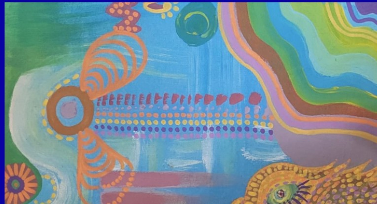

MASHIRO
À PARTIR DU
01.11.26NOTRE GALERIE
Un concept
Chaque mois, nous invitons une nouvelle artiste à investir la galerie. Pendant trente jours, elle est seule à l’honneur : ses œuvres sont exposées, racontées et mises en vente.
Pas de foule d’artistes à parcourir en diagonale, pas de catalogue sans fin. Juste le temps de s’arrêter, de découvrir une démarche, un univers, une voix singulière, et de laisser une œuvre vous accompagner si elle vous parle.
Notre galerie est entièrement dédiée aux artistes femmes. Parce qu’elles restent encore trop peu représentées dans les galeries et les collections, nous avons choisi de leur donner toute la place : une scène, une voix, et le temps d’être vraiment regardées.

POURQUOI CE FORMAT ?
Parce que l’art mérite de l’attention. En mettant une seule artiste en lumière à la fois, nous voulons créer un vrai tête-à-tête entre ses œuvres et vous, et soutenir directement celles qui les créent.